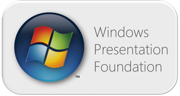

آموزش WPF به زبان سی شارپ
بنام خدا

ساخت برنامه های تحت ویندوز همواره مورد توجه برنامه نویسان بوده است.
مایکروسافت برای ایجاد برنامه های تحت ویندوز از تکتولوژی های مختلفی از جمله :
Windows Form Apllication , WPF , UWP بهره میبرد .
دومین تکنولوژی ارائه شده در این راستا , دبلیو پی اف میباشد که با توجه به تغییرات ساختاری و بهینه سازی های مطلوب نسبت به ویندوز فرم از محبوبیت بیشتری برخوردار هست و توصیه میگردد اگر از ابتدا قصد یادگیری برنامه نویسی ویندوز را دارید از این تکنولوژی شروع بکار نمائید.

دانلود فایل های آموزشی
Start
Shape
Layout
Style
Template
Transform
Animation
- قسمت دوازدهم : معرفی و کار با Animation
- قسمت سیزدهم : ادامه کار با Animation
- قسمت چهاردهم : ادامه کار با Animation
User Control
Entity Framework
Binding
- قسمت سی و هشتم : معرفی و کار با Binding
- قسمت سی و نهم : ادامه کار با Binding
- قسمت چهلم : ادامه کار با Binding
- قسمت چهل و یکم : ادامه کار با Binding
Binding And Converting
- قسمت چهل و دوم : معرفی و کار با Binding And Converting
- قسمت چهل و سوم : ادامه کار با Binding And Converting
Binding And Observable
- قسمت چهل و چهارم : معرفی و کار با Binding And Observable
- قسمت چهل و پنجم : ادامه کار با Binding And Observable
نظرات شما
قسمت نظرات با استفاده از سرویس دیسکاس پیاده سازی شده است. متأسفانه این سرویس از داخل ایران قابل دسترس نیست. لطفا از آی پی خارجی استفاده کنید.